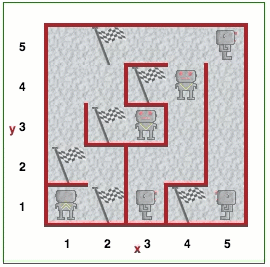

Kai pradėsite galvoti apie pateiktą uždavinį, labai rekomenduoju parašyti pseudokodą ant popieriaus.
Iššūkis - pažiūrėti, ar galite pakankamai pritaikyti savo sugalvotą pseudokodą tikram Robotuko sprendimui. Kad tai pasiektumėte, šiam žingsniui turėtumėte skirti daug daugiau laiko popieriui nei klaviatūrai! Jei su savimi neturite popieriaus lapo, paprašykite mokytojo, kad jums jo duotų.
Atidarykite Robotuko aplinkos 17 lygį.
Robotukas prarado savo pietų dėžutę. Robotukas žaidė labirinte ir, padėjęs ją ant žemės, pradėjo klaidžioti. Dabar Robotukas yra alkanas. Pietums skirtą dėžutę simbolizuoja vėliavėlė. Kiekvieną kartą paspaudus žaisti, ir vėliavėlė, ir Robotukas atsiras atsitiktinėje vietoje. Robotuko situacija atrodo taip:
Parašykite programą, kuri padėtų Robotukui surasti pietų dėžutę. Paslaptis ta, kad Robotukas turi sekti palei dešinįjį labirinto kraštą, pasukdamas ir judėdamas į dešinę, jei gali, eidamas tiesiai, jei negali pasukti į dešinę, arba kraštutiniu atveju pasukdamas į kairę. Parašykite programą, naudodami if..elif..else sakinį, kad Robotukas galėtų rasti pietus.